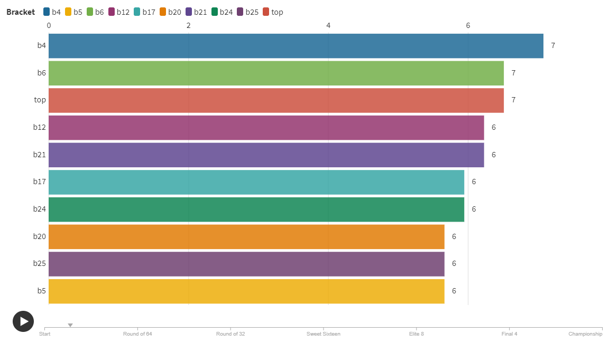

My project is about March Madness and how accurate the model I created was in predicting games
The objectives are:
1)Was my model more accurate than the average bracket, and if so by how much? Which games were the most shocking to both my model and bracket makers in general?
2)Who were the perceived favorites and how did they perform?
3)The user would learn about the effectiveness of my bracket, in addition to randomness and madness that is march madness.
So far I have finished one graph (the dot plot) and made rough drafts of 3 different graphs in d3, they are mostly done but I need to work on colors and clean them up. I also made a bar chart race using Flourish.
By the end of the week all the graphs expect the bar chart race should be finished, and soon after that the bar chart race should be finished
So far I foresee no future roadblocks
These first 2 graphics are for objective 1
This graph shows the distributions of my bracktes, and where my different brackets end up in terms of overall percentile of the 5+ millions brackets that were made through ESPN
The following graph is a scatter plot that has the percent of times I picked the favorite or better seed to win on the x axis and the y axis is how often all ESPN brackets did
This next one is for objective 2
And is a small multiples of two different bar charts that show the percent of times I or ESPN choose certain teams to win it all and then how far they went
this next one should be for objective 1 but it is not finished and I'll want it to be a bar chart race, where the different charts are mine, the top one overall and ESPN's "peoples" bracket
This last one is for objective 3 and displays the average seed after each round
The line in red is 2021 which signifies that this year saw more "chaos" due to more upsets than usual